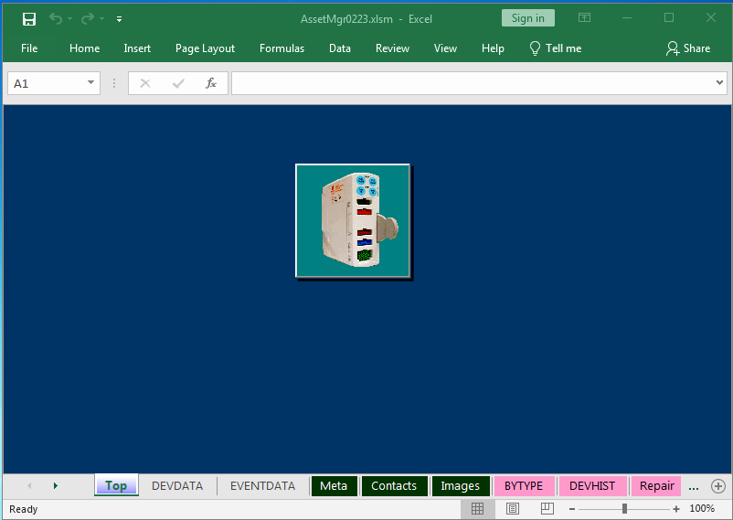

Getting Started¶
System Requirements¶
“Asset Manager” (also known as AssetMgr) is an Excel workbook using Visual Basic for Applications (a scripting language) to facilitate managing non-consumable equipment for Operating Theatres and Post-Op Recovery. As the software was written in and runs in Excel, there is no installation required except for Excel itself, which the organisation has provided. This workbook can be opened anywhere Excel is available. This file best serves the Operating Theatre when stored on a local drive.
The software makes use of images to help the user identify the device. The folder of device images (interestingly named “images”) must accompany - as in, be in the same folder - as the AssetMgrxxx file, or it will not open. The user can launch the AssetMgr file anywhere - on a local drive, on a memory stick, or on the Data8 server - but a copy of the images folder must be in that folder with it.
Help, on the other hand, can be opened as long as the user opens Asset Manager on a drive that can see the Metro South network.
Starting Asset Manager¶
When you open Asset Manager in Excel 2016, security settings (set by the Metro South IT service) may issue a security warning:
Some active content has been disabled. Click for more details.
Next to this warning is a button labelled [Enable Content]. This button must be clicked in order for the software to work. When you click this button, another security warning may appear, asking whether you wish to make this file a Trusted Document. If you wish to no longer see these warnings, click [Yes]. If you wish to disable warnings for networked files (any files that live on the server instead of on the PC you’re working on), tick the box in the lower left-hand corner.
The Asset Manager workbook will resize itself as it displays a splash screen. The workbook defaults to the “Top” worksheet:
…which has one large button on it. This button brings up the form that facilitates managing devices.